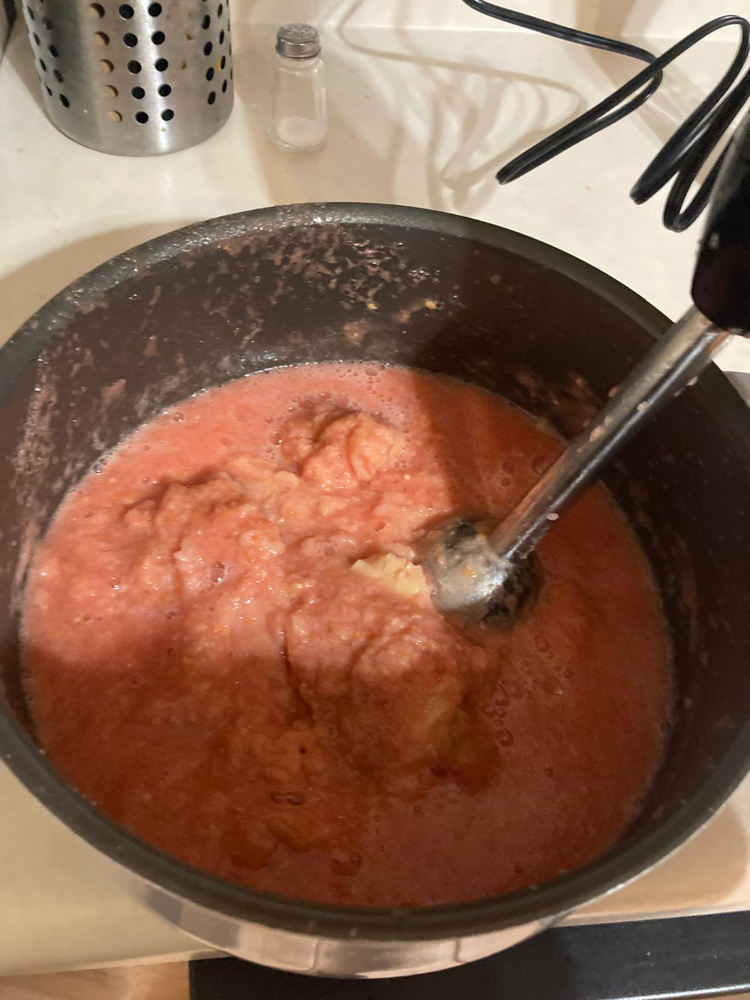

- Lavamos los tomates y quitamos el tallo. Cortamos en trozos. No hace falta pelarlos, al triturarlos no se notará la piel.
- Triturar los tomates bien con la batidora hasta que no se vean trozos de tomate o trozos de piel.
- Colocamos el pan en un bol y lo cubrimos con el tomate. Dejamos que se moje unos 10 minutos.
- Picamos el diente de ajo y lo añadimos a la mezcla. Trituramos todo bien hasta que no se noten muchos grumos de pan. Tendremos una crema espesa.
- Incorporamos el aceite y batimos todo hasta que el salmorejo sea uniforme, suficientemente compacto para aguantar en su superficie el jamón y huevo. En este momento añadimos también un puñado de sal.
- Añadimos el huevo duro y trozos de jamón.

